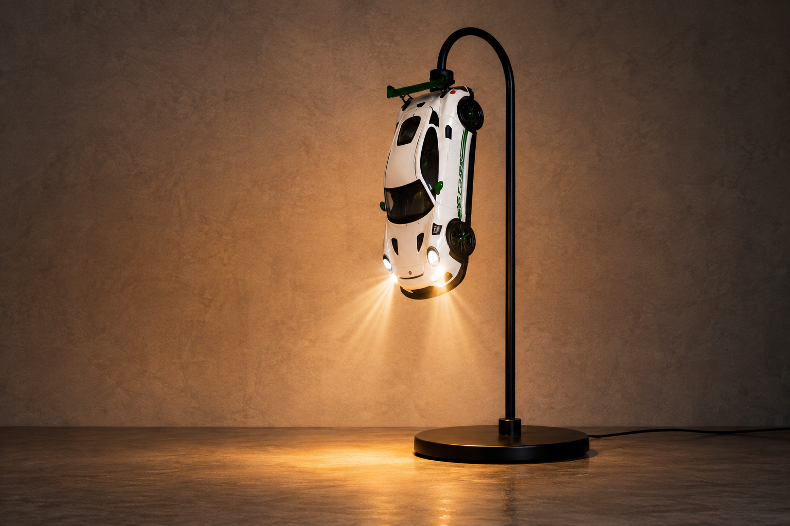

PROJET SCOLAIRE
HEADLIGHTS
HEADLIGHTS est un projet scolaire réalisé dans le cadre de ma formation de Bachelor pour mon examen final. Il s'agit d'une marque de lampe circadienne, pour laquelle j'ai conçu l'identité visuelle, le logo, la charte graphique et les supports de communication. De plus il a fallut créer un univers visuel cohérent pour la marque, en respectant les principes de design et d'ergonomie, ainsi qu'un site internet qui rescence l'entièreté de la collection de lampes. Un projet qui m'a permis de mettre en pratique mes compétences en design graphique, en communication visuelle et en web design.